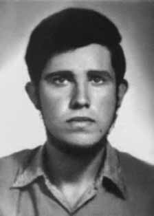

Hélio
Luiz
Navarro
de Magalhães
CIRCUNSTÂNCIAS DA MORTE
Segundo o relatório do Ministério da Marinha para o Ministro da Justiça de 1993, Hélio Luiz Navarro de Magalhães “Fev/74, foi preso gravemente ferido, como terrorista, na região ‘Chega com jeito’, portando um fuzil metralhadora adaptado cal. 38, um revólver cal. 38 e uma cartucheira com 36 cartuchos.”.
Em seguida, o mesmo relatório diz o seguinte: “Fev/74, filho do Comte. Hélio Gerson Menezes de Magalhães, foi preso após ter sido ferido. Possibilidades de sobrevivência desconhecidas.”. Por fim, o documento sustenta que Hélio teria morrido no mês seguinte: “Nov/74, relacionado entre os que estiveram ligados à tentativa de implantação de guerrilha rural, levada a efeito pelo Comitê central do PC do B, Xambioá. Morto em 14 MAR 74”.
Já o Relatório do CIE, Ministério do Exército, registra sua morte em 14 de abril de 1974. O Relatório Arroyo não narra a situação em que Hélio poderia ter sido preso ou morto. Seus únicos registros relativos ao guerrilheiro são os seguintes: “Viram então os soldados que vinham seguindo o rastro e passavam a uns dez metros de onde os companheiros se encontravam. Os soldados atiraram, ouviu-se várias rajadas. J., Zezim e Edinho (Helio Luiz Navarro) escaparam por um lado. Não se sabe se os outros três – Piauí, Beta e Edinho encontraram Duda, do grupo do Nelito.”
Em seguida, Arroyo afirma que: “No dia 19 de janeiro, J. decidiu tentar aproximar-se do local de referência com a CM, na esperança de que algum companheiro aparecesse por lá. Foi junto com Zezim, deixando Edinho e Duda juntos. A estes recomendou que, se encontrassem Piauí, avisassem de um encontro para os dias 1° e 15, a partir de março. O local de referência com a CM distava uns quatro a cinco dias. Era na antiga área da CM, de cinco em cinco dias. Quando J. e Zezim se aproximavam do local onde houve os tiroteios de 25 de dezembro, notou-se fortes rastros do inimigo, não só antigos como recentes. E os helicópteros sobrevoavam o local. Decidiram voltar porque não havia condições para prosseguir.”
Embora as passagens não permitam qualquer conclusão sobre as circunstâncias da morte ou do desaparecimento forçado de Hélio, elas permitem deduzir que até janeiro de 1974, o guerrilheiro encontrava-se vivo e integrado ao que restara da guerrilha. Em depoimento prestado à Comissão Nacional da Verdade (CNV), o Sargento Santa Cruz afirma tê-lo visto detido na Casa Azul, em Marabá (PA). Em entrevista a Romualdo Pessoa Campos Filho, José Veloso de Andrade, morador da região que trabalhou como cozinheiro e guia para os militares durante o período, afirma que viu Hélio vivo e preso na base da Bacaba, sem precisar a data deste evento.
Por fim, Raimundo Nonato dos Santos, depôs ao MPF, em 2001, que viu Hélio levar três tiros do Capitão Salsa, também conhecido como Aníbal, e do soldado Ataíde. O episódio teria ocorrido “na cabeceira da Borracheira, na direção da Fortaleza”. Apesar de armado, Hélio não teria atirado nos militares e foi levado vivo a um helicóptero.
According to the report from the Ministry of the Navy to the Minister of Justice in 1993, Hélio Luiz Navarro de Magalhães “Feb/74, was arrested seriously injured, as a terrorist, in the ‘Chega com como’ region, carrying an adapted machine gun caliber 38, a revolver caliber 38 and a cartridge case with 36 cartridges.”.
Then, the same report says the following: "Feb/74, son of Comte. Hélio Gerson Menezes de Magalhães, was arrested after being injured. Survival possibilities unknown." Finally, the document states that Hélio died the following month: "Nov/74, listed among those linked to the attempted implementation of rural guerrilla warfare, carried out by the Central Committee of the PC do B, Xambioá. Killed on 14 MAR 74".
The CIE Report, Ministry of the Army, records his death on April 14, 1974. The Arroyo Report does not describe the situation in which Hélio could have been arrested or killed. His only records relating to the guerrilla are the following: "They then saw the soldiers who were following the trail and passing about ten meters from where their companions were. The soldiers fired, several volleys were heard. J., Zezim and Edinho (Helio Luiz Navarro) escaped on one side. It is not known whether the other three – Piauí, Beta and Edinho found Duda, from Nelito's group."
Next, Arroyo states that: "On January 19th, J. decided to try to approach the reference location with the CM, in the hope that a companion would appear there. He went with Zezim, leaving Edinho and Duda together. He recommended to them that, if they found Piauí, they should notify them of a meeting for the 1st and 15th, starting in March. The reference location with the CM was about four to five days away. It was in the former CM area, from every five days. When J. and Zezim approached the place where the shootings took place on December 25th, they noticed strong enemy tracks, both old and recent. They decided to return because there were no conditions to continue.”
Although the passages do not allow any conclusion about the circumstances of Hélio's death or forced disappearance, they do allow us to deduce that until January 1974, the guerrilla was alive and integrated into what was left of the guerrilla. In a statement given to the National Truth Commission (CNV), Sergeant Santa Cruz claims to have seen him detained at Casa Azul, in Marabá (PA). In an interview with Romualdo Pessoa Campos Filho, José Veloso de Andrade, a resident of the region who worked as a cook and guide for the military during the period, states that he saw Hélio alive and imprisoned at the Bacaba base, without specifying the date of this event.
Finally, Raimundo Nonato dos Santos, testified to the MPF, in 2001, that he saw Hélio being shot three times by Captain Salsa, also known as Aníbal, and soldier Ataíde. The episode would have occurred “at the head of Borracheira, in the direction of Fortaleza”. Despite being armed, Hélio did not shoot the soldiers and was taken alive to a helicopter.
Según el informe del Ministerio de Marina al Ministro de Justicia de 1993, Hélio Luiz Navarro de Magalhães “feb/74, fue detenido gravemente herido, en calidad de terrorista, en la región de Chega com como, portando una ametralladora adaptada calibre 38, un revólver calibre 38 y una vaina con 36 cartuchos”.
Luego, el mismo informe dice lo siguiente: "Feb/74, hijo del conde. Hélio Gerson Menezes de Magalhães, fue detenido tras resultar herido. Se desconocen posibilidades de supervivencia". Finalmente, el documento precisa que Hélio murió el mes siguiente: "Nov/74, figura entre los vinculados al intento de implementación de guerra de guerrillas rural, llevado a cabo por el Comité Central del PC do B, Xambioá. Asesinado el 14 MAR 74".
El Informe CIE, Ministerio del Ejército, registra su muerte el 14 de abril de 1974. El Informe Arroyo no describe la situación en la que Hélio podría haber sido arrestado o asesinado. Sus únicos registros relacionados con la guerrilla son los siguientes: "Entonces vieron a los soldados que seguían el rastro y pasaban a unos diez metros de donde estaban sus compañeros. Los soldados dispararon, se escucharon varias ráfagas. J., Zezim y Edinho (Helio Luiz Navarro) escaparon por un lado. No se sabe si los otros tres - Piauí, Beta y Edinho encontraron a Duda, del grupo de Nelito".
A continuación, Arroyo afirma que: "El 19 de enero, J. decidió intentar acercarse al lugar de referencia con el CM, con la esperanza de que allí apareciera un compañero. Fue con Zezim, dejando a Edinho y a Duda juntos. Les recomendó que, si encontraban Piauí, les avisaran de una reunión los días 1 y 15, a partir de marzo. El lugar de referencia con el CM estaba a unos cuatro o cinco días de distancia. Era en la antigua zona del CM, de cada cinco días cuando J. y Zezim se acercaron al lugar donde se produjeron los tiroteos el 25 de diciembre, notaron fuertes huellas enemigas, tanto antiguas como recientes y decidieron regresar porque no había condiciones para continuar”.
Si bien los pasajes no permiten ninguna conclusión sobre las circunstancias de la muerte o desaparición forzada de Hélio, sí permiten deducir que hasta enero de 1974 la guerrilla estaba viva e integrada a lo que quedaba de la guerrilla. En declaración dada a la Comisión Nacional de la Verdad (CNV), el sargento Santa Cruz afirma haberlo visto detenido en Casa Azul, en Marabá (PA). En entrevista con Romualdo Pessoa Campos Filho, José Veloso de Andrade, habitante de la región que trabajó como cocinero y guía militar durante el período, afirma haber visto a Hélio vivo y preso en la base de Bacaba, sin precisar la fecha de este hecho.
Finalmente, Raimundo Nonato dos Santos, declaró ante el MPF, en 2001, que vio a Hélio recibir tres disparos por parte del capitán Salsa, también conocido como Aníbal, y del soldado Ataíde. El episodio habría ocurrido “en la cabecera de Borracheira, en dirección a Fortaleza”. A pesar de estar armado, Hélio no disparó contra los soldados y fue trasladado vivo a un helicóptero.